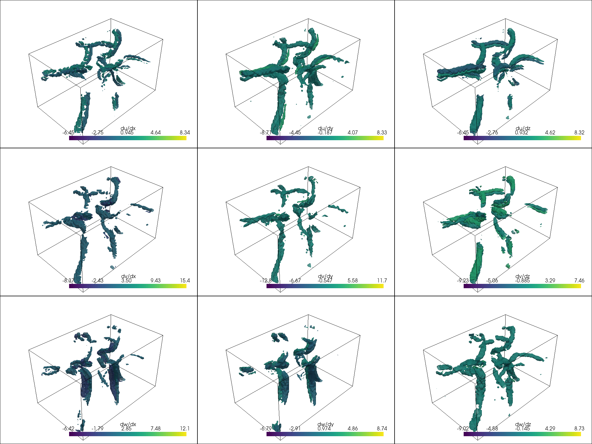
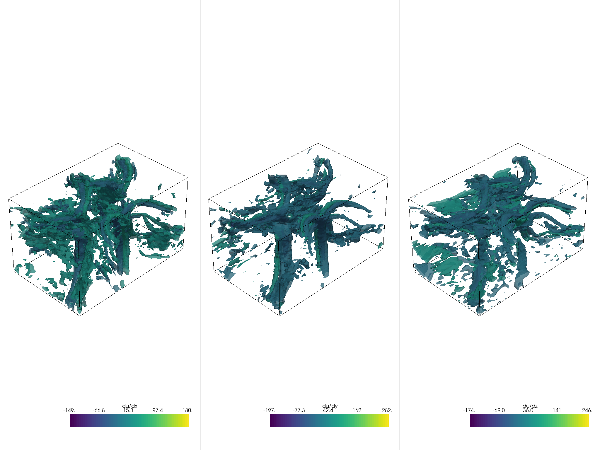

Note
Click here to download the full example code
Compute Gradients of a Field¶
Estimate the gradient of a scalar or vector field in a data set.
The ordering for the output gradient tuple will be {du/dx, du/dy, du/dz, dv/dx, dv/dy, dv/dz, dw/dx, dw/dy, dw/dz} for an input array {u, v, w}.
Showing the pyvista.DataSetFilters.compute_gradient() filter.
# sphinx_gallery_thumbnail_number = 1
import pyvista as pv
from pyvista import examples
import numpy as np
# A vtkStructuredGrid - but could be any mesh type
mesh = examples.download_carotid()
mesh
| Header | Data Arrays | ||||||||||||||||||||||||||||||||||||
|---|---|---|---|---|---|---|---|---|---|---|---|---|---|---|---|---|---|---|---|---|---|---|---|---|---|---|---|---|---|---|---|---|---|---|---|---|---|
|
|
Now compute the gradients of the vecotrs vector field in the point data
of that mesh. This is as simple as calling
pyvista.DataSetFilters.compute_gradient().
mesh_g = mesh.compute_gradient(scalars="vectors")
mesh_g["gradient"]
Out:
array([[ 7.2189998e-03, 7.6569999e-03, 3.8799997e-03, ...,
-7.3850001e-03, 1.0060001e-03, -2.1000043e-05],
[ 4.2885002e-03, 9.3000010e-04, -6.5520001e-03, ...,
-6.1399997e-03, 3.6770001e-03, 1.1730000e-02],
[ 5.4014996e-03, 1.2539998e-03, -4.6510003e-03, ...,
3.4900010e-04, 8.0140000e-03, 8.1439996e-03],
...,
[-6.3999998e-04, -2.6340000e-03, 6.1740000e-03, ...,
-4.3205000e-03, -1.2229999e-03, -1.8960000e-03],
[-1.5900000e-03, -3.4460002e-03, 4.1279998e-03, ...,
-2.9000000e-03, -5.9960000e-03, -5.8140000e-03],
[-9.1199996e-04, -4.0670000e-03, -1.5819999e-03, ...,
-2.4759998e-03, -8.5290000e-03, -5.3939996e-03]], dtype=float32)
mesh_g["gradient"] is an N by 9 NumPy array of the gradients, so we
could make a dictionary of NumPy arrays of the gradients like:
def gradients_to_dict(arr):
"""A helper method to label the gradients into a dictionary."""
keys = np.array(["du/dx", "du/dy", "du/dz", "dv/dx", "dv/dy", "dv/dz", "dw/dx", "dw/dy", "dw/dz"])
keys = keys.reshape((3,3))[:,:arr.shape[1]].ravel()
return dict(zip(keys, mesh_g["gradient"].T))
gradients = gradients_to_dict(mesh_g["gradient"])
gradients
Out:
{'du/dx': array([ 0.007219 , 0.0042885, 0.0054015, ..., -0.00064 , -0.00159 ,
-0.000912 ], dtype=float32), 'du/dy': array([ 0.007657, 0.00093 , 0.001254, ..., -0.002634, -0.003446,
-0.004067], dtype=float32), 'du/dz': array([ 0.00388 , -0.006552, -0.004651, ..., 0.006174, 0.004128,
-0.001582], dtype=float32), 'dv/dx': array([-7.5999997e-04, -1.0585000e-03, -2.9600000e-03, ...,
-1.9554999e-03, 9.9999888e-06, 2.6600000e-03], dtype=float32), 'dv/dy': array([ 0.000226, -0.00503 , -0.003388, ..., -0.0059 , -0.008274,
-0.000512], dtype=float32), 'dv/dz': array([-0.006821, -0.000382, 0.006909, ..., -0.001991, -0.003061,
-0.00189 ], dtype=float32), 'dw/dx': array([-0.007385 , -0.00614 , 0.000349 , ..., -0.0043205, -0.0029 ,
-0.002476 ], dtype=float32), 'dw/dy': array([ 0.001006, 0.003677, 0.008014, ..., -0.001223, -0.005996,
-0.008529], dtype=float32), 'dw/dz': array([-2.1000043e-05, 1.1730000e-02, 8.1439996e-03, ...,
-1.8960000e-03, -5.8140000e-03, -5.3939996e-03], dtype=float32)}
And we can add all of those components as individual arrays back to the mesh by:
mesh_g.point_arrays.update(gradients)
mesh_g
| Header | Data Arrays | ||||||||||||||||||||||||||||||||||||||||||||||||||||||||||||||||||||||||||||||||||||||||||||||||
|---|---|---|---|---|---|---|---|---|---|---|---|---|---|---|---|---|---|---|---|---|---|---|---|---|---|---|---|---|---|---|---|---|---|---|---|---|---|---|---|---|---|---|---|---|---|---|---|---|---|---|---|---|---|---|---|---|---|---|---|---|---|---|---|---|---|---|---|---|---|---|---|---|---|---|---|---|---|---|---|---|---|---|---|---|---|---|---|---|---|---|---|---|---|---|---|---|---|
|
|
keys = np.array(list(gradients.keys())).reshape(3,3)
p = pv.Plotter(shape=keys.shape)
for i in range(keys.shape[0]):
for j in range(keys.shape[1]):
name = keys[i,j]
p.subplot(i,j)
p.add_mesh(mesh_g.contour(scalars=name), scalars=name, opacity=0.75)
p.add_mesh(mesh_g.outline(), color="k")
p.link_views()
p.view_isometric()
p.show()

Out:
[(248.28008427611132, 214.78008427611132, 133.78008427611132),
(137.5, 104.0, 23.0),
(0.0, 0.0, 1.0)]
And there you have it, the gradients for a vector field! We could also do
this for a scalar field like for the scalars field in the given dataset.
mesh_g = mesh.compute_gradient(scalars="scalars")
gradients = gradients_to_dict(mesh_g["gradient"])
gradients
Out:
{'du/dx': array([-7. , -7. , -4. , ..., -0.5, -1.5, -2. ], dtype=float32), 'du/dy': array([ 0., 5., 12., ..., -3., -1., -3.], dtype=float32), 'du/dz': array([-13., -8., -3., ..., 4., 4., 1.], dtype=float32)}
mesh_g.point_arrays.update(gradients)
keys = np.array(list(gradients.keys())).reshape(1,3)
p = pv.Plotter(shape=keys.shape)
for i in range(keys.shape[0]):
for j in range(keys.shape[1]):
name = keys[i,j]
p.subplot(i,j)
p.add_mesh(mesh_g.contour(scalars=name), scalars=name, opacity=0.75)
p.add_mesh(mesh_g.outline(), color="k")
p.link_views()
p.view_isometric()
p.show()

Out:
[(379.8465899883094, 346.3465899883094, 265.3465899883094),
(137.5, 104.0, 23.0),
(0.0, 0.0, 1.0)]
Total running time of the script: ( 0 minutes 30.137 seconds)